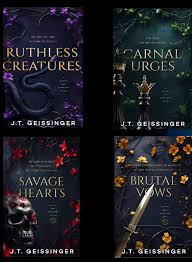

Ruthless Creatures is part of a four-book mafia romance collection called Queesn & Monsters. The books follow couples in the same interconnected and dangerous world.
Intense chemistry: Geissinger creates palpable tension between her characters, from initial dynamics to fierce relationships. The chemistry is off the charts and guarenteed to leave you breathless.
Complex, mulit-layered characters: Each protagonist grapples with deep-seated trauma, internal conflict, and complex past. Their journeys and character growth make their relationships all the more rewarding.
Gripping plots: Beyond romance, a larger world unfolds. With betrayal, revenge, and intricate power plays, the plot is full of unexpected twists that will keep you engaged from the first page to the last.
Part of a shared world: By reading the full series, you get to see how different stories connect and how characters' paths cross. This interconnectedness builds a rich and immersive world that will keep you hooked.
Verdict: For any readers that enjoy romance and suspenstion, the Queens & Monsters series is the perfect escape. Geissinger balances dar elements with genuine emotional character work.
Rating: 9/10
